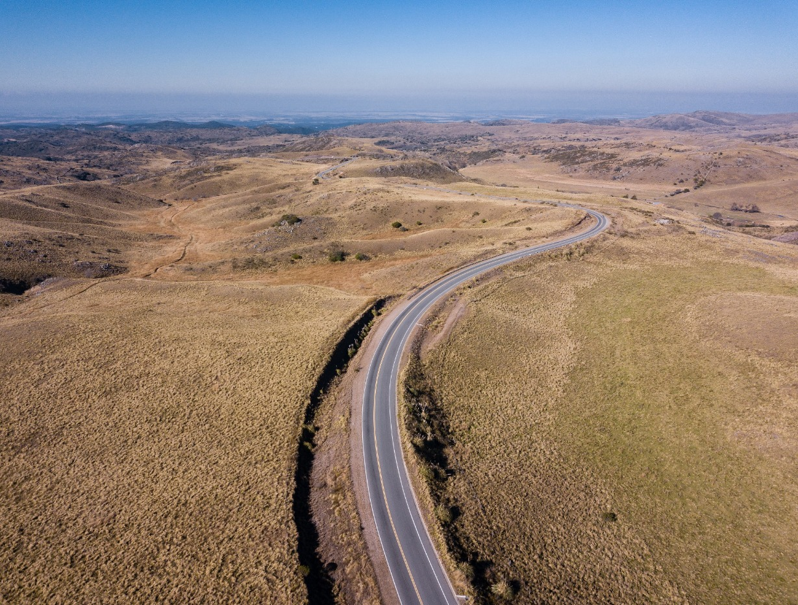
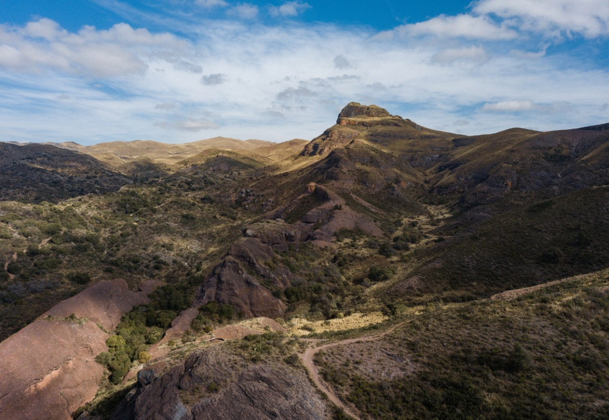

Entre atractivos naturales e incluso los aportes humanos en arquitectura e ingeniería, la principal actividad económica se localiza en las Sierras de Córdoba, por ejemplo en los valles de Punilla, de Traslasierra, de Paravachasca, de Calamuchita y el Valle del Sol es el turismo, y por esto (2001) es que tal región cordobesa recibe a más del 40% de los turistas de la provincia. Existen distintas alternativas para el hospedaje: cabañas, campings, hostings y hosteles, hosterías y hoteles de todas las categorías a los que se suman el alquiler de casa o departamentos por temporada. Existe una variedad de atracciones naturales donde se destacan varias de las 7 maravillas naturales de la Provincia de Córdoba como por ejemplo el Cerro Uritorco, la Cueva de los Pajaritos, Los Terrones, Cuevas de Ongamira, Cerro Colorado, Parque Autóctono Cultural y Recreativo, el Zapato (como el Uritorco, ubicado inmediato a Capilla del Monte), La cascada de Olaen, Las Tres Cascadas, Los Chorrillos, El cerro de Los Gigantes, el cerro Champaquí, La Cumbrecita con su río subterráneo, sus bosques de coníferas y su cascada, la Quebrada del Yatán, la Quebrada de la Mermela y el Singuriente, Quebrada de La Palmita, el Parque nacional Quebrada del Condorito (también conocido en la provincia de Córdoba como de los Condoritos) en el cual se encuentra la quebrada del río Yuspe, Taninga, Chancaní con sus precipicios y túneles, Los Mogotes, Los Paredones (cerca de Capilla del Monte), las Siete Cascadas (en La Falda) y muchos otros relacionados con los ríos de Punilla: Río Cosquín, San Esteban, La Toma, Dique San Jerónimo, Dique El Cajón, Dique San Roque, etc. Asimismo hay otras atracciones como El Mástil, El Cristo, El Laberinto, las aerosillas como la de Carlos Paz, el Camino del Cuadrado, La cascada de Thea, Vaquerías, Cavernas el Sauce, el enorme lago salado o mar interior llamado Mar de Ansenuza etc.